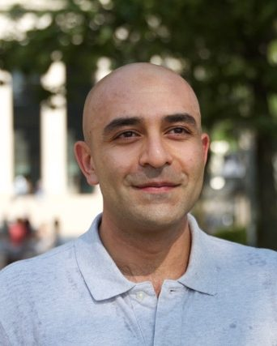

|  | I am a postdoctoral associate at MIT Institute for Data, Systems, and Society, co-advised by Dean Eckles and Elchanan Mossel. I did my PhD in Electrical and Systems Engineering at the University of Pennsylvania, advised by Ali Jadbabie. Broadly speaking my works are at the intersection of networks, data and decision sciences. I borrow tools from applied probability, statistics, algorithms, as well as decision and game theory. I am mostly interested in applications involving social and economic networks. |
Education:
Bachelor's in Electrical Engineering-Control, Sharif University of Technology
Master's in Electrical and Computer Engineering, Concordia University
Master's in Statistics, Wharton School, University of Pennsylvania
Master's in Systems Engineering, University of Pennsylvania
PhD in Electrical and Systems Engineering, University of Pennsylvania
Research Interests:
Network Science, Statistical Analysis of Networks
Statistical Decision Theory, Estimation, and Inference
Applied Problems in Social and Economic Networks, Social Platforms
Social Learning and Collective Intelligence
Social and Behavioral Sciences, Judgement and Decision Making
Distributed Dynamics, Control, Estimation, and Learning
Awards and Honors:
Gold medal in Iran National Chemistry Olympiad (2004)
Finalist in 2015 Facebook Fellowship Competition
Outstanding Poster Award in 2016 Stochastic Networks Conference
ACC 2016 Best Student Paper Award Finalist
ESE Graduate Award for Best Teaching Assistant at the Doctoral Level (2016)